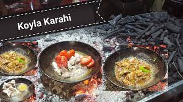

Koyla Karahi

-
About Koyla Karahi
-
Koyla karahi is now served in big occasions like weddings and receptions also.
It is the most famous highway dish in Karachi.
Karahi is originated from the northern areas of Pakistan.
The people of Peshawar have a large variety of karahis as well.
Go Back